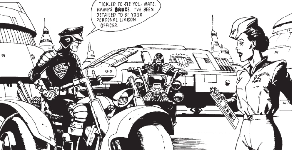

The laid back, Oz counterpart to Dredd, who serves as his liason when Dredd travels to arrest Chopper during the Supersurf contest.
Art by Steve Dillon
| Story Title | Parts | Pages | w indicates a wraparound coverCovers | Year(s) | Issues | Writer | Artist | Colourist | Letterer |
|---|---|---|---|---|---|---|---|---|---|
From Judge DreddOz | 26 | 198 | 9 | 1987-1988 | 545-570 | Alan Grant John Wagnervarious | Cliff Robinson: 1 Jim Baikie: 2, 25‑26 Dave Elliot, Garry Leach, Will Simpson: 3‑4 Brendan McCarthy: 5, 7‑8, 14‑16 Will Simpson: 6, 11‑12, 17‑19 Steve Dillon: 9‑10 Barry Kitson: 13, 22‑24 John Higgins: 20‑21 various | <-- 52pp, [b&w] | Tom Frame |
From Judge Dredd Megazine crossover.Judgement Day | 20 | 150 | 786: Peter Doherty M2.04: Dean Ormston 788: Brian Williamson M2.07: David Bishop 794: Brett Ewins 796: Carlos Ezquerra 798: Peter Doherty 799: Carlos Ezquerra 8 | 1992 | 786-799, M2.04-2.09 | Garth Ennis | Peter Doherty 1‑2, 10‑11, 19 Carlos Ezquerra 4‑5, 7‑8, 13‑14, 16‑17, 20 various | <-- | Tom Frame |
| year | episodes | pages |
| 1979 | 0 | 0 |
| 1980 | 0 | 0 |
| 1981 | 0 | 0 |
| 1982 | 0 | 0 |
| 1983 | 0 | 0 |
| 1984 | 0 | 0 |
| 1985 | 0 | 0 |
| 1986 | 0 | 0 |
| 1987 | 10 | 76 |
| 1988 | 16 | 122 |
| 1989 | 0 | 0 |
| 1990 | 0 | 0 |
| 1991 | 0 | 0 |
| 1992 | 20 | 150 |
| 1993 | 0 | 0 |
| 1994 | 0 | 0 |
| 1995 | 0 | 0 |
| 1996 | 0 | 0 |
| 1997 | 0 | 0 |
| 1998 | 0 | 0 |
| 1999 | 0 | 0 |
| 2000 | 0 | 0 |